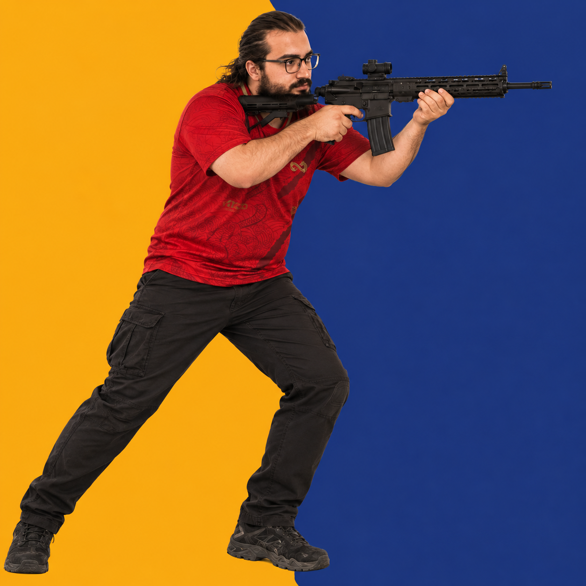

MP3 yükle, ses dalgasından istediğin bölümü kes, bir tuşa ata. Oyunda ya da Discord'da tek tuşla mikrofonundan çal. Bas-konuş tuşunu otomatik basılı tutar.
İNDİRDalga üzerinde başlangıç ve bitişi sürükle, en fazla 1 dakikalık parçayı kaydet.
Her sese kendi tuşunu ver (örn. Alt + 4). Aynı tuş iki sese verilemez.
Ses çalarken seçtiğin bas-konuş tuşu otomatik basılı tutulur, bitince bırakılır.